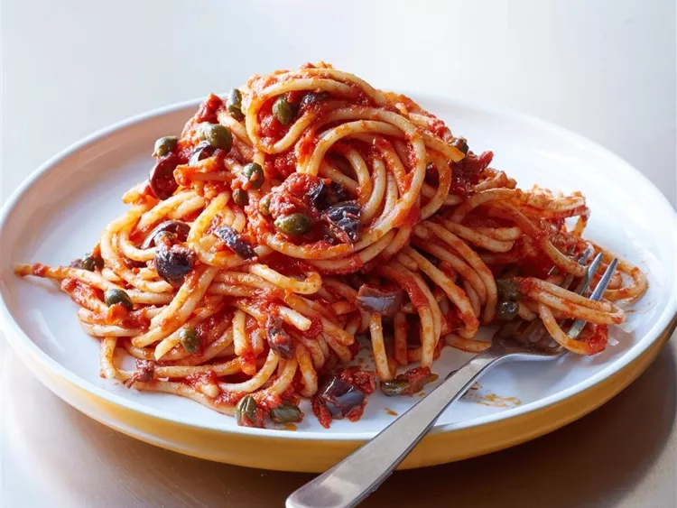

Puttanesca

Description
Spaghetti alla puttanesca (Italian: [spagetti alla puttaneska]) is a pasta dish invented in Naples in the mid-20th century and made typically with tomatoes, olives, capers, anchovies, garlic, peperoncino, extra virgin olive oil and salt.
Ingredients
- 8 ounces spaghetti
- ½ cup olive oil
- 3 cloves garlic, minced
- 2 cups chopped tomatoes, pushed through a sieve
- 4 anchovy filets, rinsed and chopped
Steps
- Bring a large pot of lightly salted water to a boil. Cook spaghetti in boiling water for 8 to 10 minutes or until al dente; drain.
- Heat oil in a skillet over low heat; cook garlic in oil until golden. Add sieved tomatoes, and cook 5 minutes. Stir in anchovies, tomato paste, capers, olives, and red pepper flakes. Cook 10 minutes, stirring occasionally.
- Toss pasta with sauce, and serve.